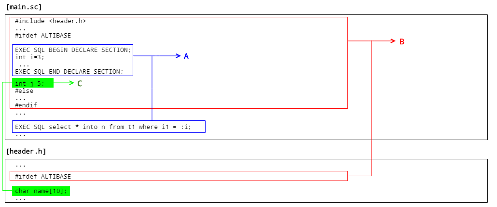
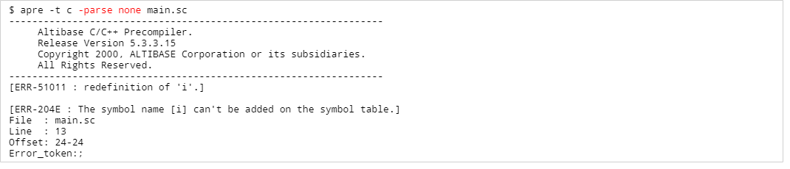

Overview
This document describes the net functions, changes, and upgrade procedures of APRE*C/C++, which is the later version of SES*C/C++.
For details not mentioned in the document, refer to [Altibase Precompiler Guide].
The document standard was prepared based on Altibase version 5.3.3, which was initially provided by APRE*C/++, and the execution result in the document was the result performed in version 5.3.3.15.
It is recommended to refer to the following technical documents to understand the contents of this document.
APRE*C/C++
This section describes Altibase's new Precompiler of Embedded SQL. Please refer to Altibase Precompiler Guide for specific details such as usage of the function as a summary form.
Terms
Precompiler of Embedded SQL
The program that receives source code including embedded SQL and converts the embedded SQL into execution-time library function calls.
SES*C/C++
It is an abbreviation of the Precompiler of Embedded SQL for versions lower than Altibase 5.1.5, and supports C and C++ as source code.
APRE*C/C++
It is an abbreviation of the Precompiler of Embedded SQL for versions lower than Altibase 5.3.3, and supports C and C++ as source code. Compared to SES*C/C++, the upgrade level function is improved.
Background
SES*C/C++ had a number of restrictions as follows, which caused inconvenience when using it.
- Macro processing restrictions
- Cannot declare host variable outside the DECLARE SECTION
- Host variable declaration method and usage restrictions
- Some standard built-in SQL statements are not supported
In order to provide development convenience with the Precompiler of Embedded SQL to Altibase users, these restrictions should be improved first.
Overview of New Features
Many restrictions that existed in SES*C/C++ have been greatly improved.
The name was also changed to APRE*C/C++ (Altibase C/C++ Precompiler of Embedded SQL) while applying the upgrade.
The functions newly added to APRE*C/C++ are as follows:
- Partial C Preprocessor for macro processing
- C Parser for host variable declaration
- Function to rewrite the library to alleviate host variable declaration method and usage restrictions
- DECLARE STATEMENT statement support
In addition, the following improvements were made:
- Function callable when using WHENEVER statement
- APRE*C/C++ executable file (apre) command option has changed and added
- the error message output type has changed
Details of New Features
Equipped with Partial C Preprocessor
Most of the macros below can be processed without any restrictions on the declaration area.
 #include, #define #if, #ifdef, #ifndef, #endif, #else, #elif
#include, #define #if, #ifdef, #ifndef, #endif, #else, #elif
Equipped with C Parser
Only when the source code is written in C, the host variable declaration is possible outside the host variable declaration section (DECLARE SECTION).

Host variable declaration method and ease of using restrictions
Many restrictions related to the user of host variables have been removed. Details are as follows.
- The initial value can be assigned at the same time as the host variable declaration

- Structure definition available after typedef (reverse also available)

- Array elements can be specified when using array-type host variables in embedded SQL statements.
- Data types other than char * and struct * can be used as pointer type host variables.

- The host variable for output can be used without ":" in INTO clause of the SELECT statement

- Can be used even if the input host variable of the embedded SQL including the FOR clause is not an array type

- The union type host variable can be used
Additional support for DECLARE STATEMENT
The DECLARE STATEMENT is supported as a standard embedded SQL statement.
Identifiers for SQL statements or PL/SQL blocks can be declared so that they can be used in other embedded SQL statements.

Function callable when using WHENEVER statement
This has been improved so that a specific function can be called when using the WHENEVER statement in the form of WHENEVER <condition> DO <function>.

APRE*C/C++ executable file (apre) command option has been changed
- -I
The name has been changed to -I as an option provided as -include option in the existing SES*C/C++.
This specifies the path of the source doe file included during precompiling.
This option operations like EXEC SQL OPTION (INCLUDE=library_path) in code
- -keyword
This shows reserved keywords.
-parse parsing_mode
By specifying the parsing mode, the precompile range for the source file is determined.
- The parsing mode and processing range of the -parse option are as follows.
- If the -parse option itself is omitted, the parsing mode is operated as partial.Parsing mode Internal SQL A Macro B External declaration part/
host variable
C
Remarks none O X X Operates the same as SEC*C/C++ #include format header file is not processed partial O O X Additional operation of Partial C Processor Process even header files in #include format APRE*C/C++ default parsing mode full O O O Additional operation of C Parser Process even header files in #include format However, source code written in C++ style cannot recognize host variables outside the declaration section In the case of [Processing up to #include type header file], even another header file declared as #include type in the corresponding header file is processed.
For example, after changing the query in the example above to an optional query using macros as shown below.
When the parsing option is omitted and precompile with partial(the default parsing mode)
The actual created codes remain only in the stage that the macro processing is completed as follows. (After the macro processing, the removed part is replaced with a blank space). If -parse none is specified to precompile in the same way as the existing SEC*C/C++, a variable duplicate declaration error occurs because the macro processing function does not operate.
If -parse none is specified to precompile in the same way as the existing SEC*C/C++, a variable duplicate declaration error occurs because the macro processing function does not operate.

Precautions
Syntax improvement
In order for existing SES*C/C++ to describe EXEC SQL BEGIN/END DECLARE/ARGUMENT SECTION in the code, it is irrelevant even if the terminator ";" is omitted, but APRE*C/C++ must have ";".
This precaution applies the same as other DBMS precompilers.
The following is an error when the terminator is not specified in the END DECLARE SECTION.

Source code precompile of C++ style
To use a host variable outside the host variable declaration section, the mode of the parse option must be set to full.
However, if the parsing mode is set to full, the C parser operates, so the source code of C++ style may cause various parsing errors during preprocessing.
In other words, source code written in C++ style should declare host variables only in the host variable declaration section such as SES*C/C++, and if the -parse option is used, the parsing mode should be partial or none.
-D, -I Options
If the -D and -I options are used in the C/C++ compilation stage, in most cases, correct precompile is possible only when the same option is given in the precompile stage with APRE*C/C++.
Notes
-I Option
It is fine to use -include, but it is recommended to change to a new option in consideration of future maintenance.
Binary data type change
The name of the previously used SES_CLOB, SES_BLOB, SES_BINARY, SES_BYTES, and SES_NIBBLE types have changed to APRE_CLOB, APRE_BLOB, APRE_BINARY, APRE_BYTES, and APRE_NIBBLE.
Since backward compatibility is considered, it is okay to use an existing name.
precompile execution time
Compared to SES*C/C++, the precompile execution time is slightly slower.
The following is the result of measuring the precompile time of the sample example arrays1.sc (about 450 lines) provided while installing Altibase with SES*C/C++ and APRE*C/C++ respectively.

Changes
This section describes considerations and procedures when upgrading from SES*C/C++ environment to the ARPE*C/C++ environment.
Changes
As the name was changed from SES*C/C++ to APRE*C/C++, the name of execution file, header file, library file, link option, and execution file command options were partially changed as follows.
| Classification | SES*C/C++ | APRE*C/C++ | Related file path | Remarks |
|---|---|---|---|---|
| Execution file | sesc | apre | $ALTIBASE_HOME/bin | Changed |
| Header file | ses.h | ulpLibInterface.h | $ALTIBASE_HOME/include | Changed |
| Library files | libsesc.a | libapre.a | $ALTIBASE_HOME/lib | Changed |
| libsesc_sl.so | libapre_sl.so | #ALTIBASE_HOME/lib | Changed | |
| Link option | -lsesc | -lapre | - | Changed |
| Execution file command option | -include | -include or -I | - | Added |
Upgrade procedures
Check the version of APRE*C/C++.
Generally, it is recommended to use the latest version of APRE*C/C++, and at least 5.3.3.15 should be used in consideration of the following bugs. BUG-28392 Memory increases when Direct Execute fails (fixed 5.3.3.5)BUG-28588 Do not release a statement when null fetching (fixed at 5.3.3.6)BUG-29745 Disconnection occurs when using a cursor when there are numbers in the SELECT column clause
BUG-28392 Memory increases when Direct Execute fails (fixed 5.3.3.5)BUG-28588 Do not release a statement when null fetching (fixed at 5.3.3.6)BUG-29745 Disconnection occurs when using a cursor when there are numbers in the SELECT column clauseBUG-29903 Memory increase when repeating prepare failures (fixed at 5.3.3.15)
- Change compilation options
Please refer to the table in the Changes section, execute the following statement, link options, and change the options of the compilation file such as makefile.- Change the execution file name
- Change the link option
- makefile

- Change the execution file name
If the file related to a change is not easily identified or cannot be changed due to the large amount, the procedure in the example above can be omitted, but it is recommended to do a normal upgrade by changing the related name as much as possible.
Considerations
-Adding parse none option
APRE*C/C++ -> [Notes] -> Although the syntax is not mentioned in the section, the source that was precompiled without any problems in SES*C/C++ may cause an error in APRE*C/C++. In this case, since the parsing mode of APRE*C/C++ is partial, it is likely an error that occurs while macro processing up to the header file included in the #include method.
Therefore, if the cause of the error is not easily specified, it is necessary to check by adding the -parse none option to precompile the same as SES*C/C++.
-Error due to use of the precompiler library
If the existing source code is written to use the SES*C/C++ library directly, compilation may not be possible due to the change of the precompiler library interface. In this case, all related codes must be removed from the existing source code.
{kind=link}
{kind=link}
{kind=link}
{kind=link}
{kind=link}
{kind=link}
{kind=link}
{kind=link}
{kind=link}
{kind=link}
{kind=link}